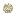

窒化ガリウム（GaN）の板
Gallium Nitride (GaN) Wafer・アイテム・Branches
仮（まだ本物どおりでない所がある）
本当の歴史：[B-20] 白色 LED バックライト（1996年）
説明
①子ども ガリウムと窒素の結晶の板。電気を流すと青く光る半導体。
②学生 化合物半導体の炉で ガリウム＋アンモニア＋マグネシウム → 4枚。作業台で アルミ＋ガラスと → 青い LED 4個。
③大人 窒化ガリウムは段差（バンドギャップ）が大きく、青い光が出る。p 型にするマグネシウムは、熱で処理して初めて働く（これが見つかって明るい青色 LED ができた）。
④ガチ 長いあいだ「青い LED は作れない」と言われていたが、1990年代に日本の研究者たちが窒化ガリウムで実用にした（2014年ノーベル物理学賞）。
作り方
（作り方のレシピは無い：拾う・掘る・ほかの方法）